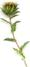
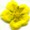
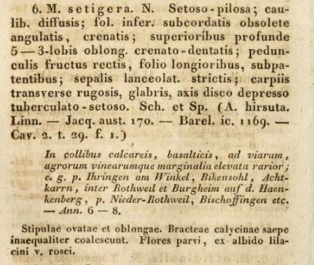

MALVA setigera K.F.Schimp. & Spenn.
Mauve hérissée
Dans l'Yonne
- Assez commune.
- Mode de vie : annuel.
- Période de floraison approximative :
Mai-Juin.
- Habitat : Marges des moissons, friches, taillis, sur sols calcaires ou marneux.
- Tailles :
 10 à 40 cm  30 mm environ.
Origine supposée des noms
- générique : du grec μαλακός (malakos), mou. Les Malvacées sont émollientes.
- spécifique : de l'adjectif latin classique saetiger, hérissé de soies.
Synonymie récente
- Althaea hirsuta L., 1753, guimauve hérissée.
- Dinacrusa hirsuta (L.) G.Krebs, 1994
Détails caractéristiques
- Ceux mentionnés en 1829 par Sch. et Sp., à la page 886 du Tome III de Flora Friburgensis et regionum proxime adjacentium :

- Feuilles moins velues que le reste de la plante, tant les "inférieures orbiculaires-crénelées" que les feuilles trés découpées vers le haut de la tige.
- Soies raides à l'origine de son nom tant sur la tige que les pétioles, les pédoncules et les calices.
- A l'aisselle des feuilles, les fleurs solitaires, hermaphrodites, sont portées par de longs pédoncules.
- Elles ont à la fois calice et calicule et leurs 5 pétales sont de couleurs variable (ex albido lilacini v. rosei).
- Leurs grains de pollen sont très gros.
- Les fruits arrondis, ridés et pubescents, contiennent des graines serrées en cercle.
Nombre d'espèces icaunaises dans le genre
|
{kind=link}
{kind=link}
{kind=link}
{kind=link}
{kind=link}